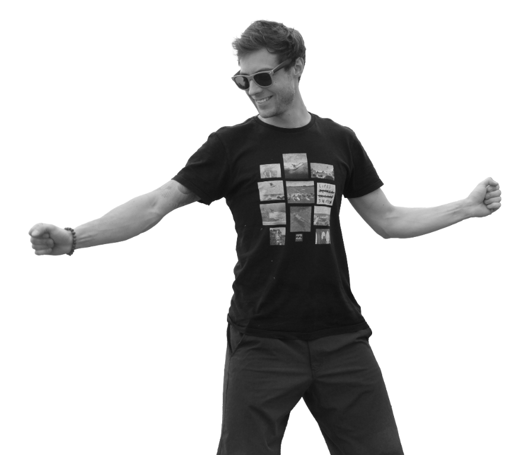

Daniel Kemper / Kreatives PortfolioDesign. Bild. Experiment.
Andere
Perspektiven.

Von der ersten Linie bis zur neuen visuellen Welt.
Produktdesign, Fotografie & freie Gestaltung.
01 / 03Produktdesign & Konstruktion
01 / Ausgewählte ArbeitenDisziplinen im Dialog
Nicht nur eine
Richtung.
Objekte, Bilder und visuelle Identitäten.
Eine Auswahl aus unterschiedlichen kreativen Welten.
11 Arbeiten angezeigt.
02 / Der Blick dahinterDaniel Kemper
Neugier als Ausgangspunkt.
Zwischen
Präzision
und Intuition.
Ich denke in Formen, beobachte in Bildern und experimentiere mit dem, was dazwischen liegt.
Meine Arbeiten bewegen sich zwischen Produktentwurf, Fotografie und visueller Gestaltung. Dieses Portfolio verbindet konstruktive Details mit freien Bildwelten – und zeigt verschiedene Wege von einer Idee zu ihrem Ausdruck.
Gemeinsam etwas Neues gestalten ↗03 / Kreative FelderVon der Idee zum Ausdruck
Was wir gestalten können.
01
Produkt & Form
Entwurf · Formstudien · CAD-Visualisierung
02
Bild & Atmosphäre
Fotografie · Bildbearbeitung · Visuelle Serien
03
Grafik & Identität
Logogestaltung · Illustration · Artwork
04 / WerdegangVom Handwerk zum Design
Stationen
und Wege.
Vom Raumausstatter-Handwerk über Handel und Technik bis zum Designstudium an der Hochschule Coburg.
Trainer
Team Wäerts GbR
Leitung und Durchführung von Team Events
Verkäufer
Le OVE GmbH
Verkauf und Beratung im Einzelhandel
Studentische Hilfskraft
Creapolis, Coburg
Einführungskurse im 3D Lab und Ansprechpartner im Maker Space
Service Point / Sportleader
Decathlon, Leipzig
Leitung des Service Points; Warenplanung; Werkstattleitung
Einrichtungsberater
Hubert GmbH, Leipzig
Kundenberatung und Wohnraumplanung
Raumausstatter
Fleischmann & Kollegen GmbH, Nürnberg
Teilzeitbeschäftigung; Renovierungsarbeiten im ICE der DB
Frühere Stationen anzeigenFrühere Stationen ausblenden
Raumausstatter
Weis Bernard GmbH, Nürnberg
Teilzeitbeschäftigung; Altbau-Sanierungen
Produktionshelfer
Procedo by gps GmbH, Bayreuth
Herstellung von Thermoplasten und thermoplastischen Elastomeren
Lichttechniker
Members, Seybothenreuth
Aufbau, Steuerung und Bedienung von Bühnentechnik
ABS-, PP- & PE-Schweißer
PPU Umwelttechnik GmbH, Bayreuth
Herstellung von Kleinkläranlagen
Raumausstatter
Optima GmbH, Bayreuth
Renovierungen im Innenausbau von Wohnräumen
Raumausstatter
Kompetenz Fachpersonal GmbH, Montage bei Audi
Mitgestaltung des Audi Driving Experience Centers in Neuburg
Selbstständig als Raumausstatter
Bayreuth
Kreative Wandgestaltungen
Raumausstatter
Optima GmbH, Bayreuth
Renovierungen im Innenausbau von Wohnräumen
Arbeitssuchend
Bayreuth
Auftragsbedingtes Wintertief
Raumausstatter
Karl Geyer GmbH, Kulmbach
Selbstständiges Realisieren von Baustellen und Unterweisen der Lehrlinge
05 / FähigkeitenKopf, Hand und Werkzeug
Was ich
mitbringe.
Berufliche Fähigkeiten
Management & Strategie
- Prozessmanagement
- Teamleitung und Konfliktbewältigung
- Waren- und Umsatzplanung
Kundenbeziehungen & Vertrieb
- Kundenakquise
- Produktpräsentation
- Product Lifecycle Management
Technisch & handwerklich
- Lichttechnik und Bühnenbau
- ABS-, PP- & PE-Schweißen
- Wandgestaltung
- Boden legen und Ausbesserungsarbeiten
Programmkenntnisse
Bildbearbeitung & Design
- Lightroom
- Photoshop
- InDesign
- Illustrator
- KeyShot
3D Design & CAD
- Fusion 360
- Rhino
- Shapr3D
- Blender (in Arbeit)
Office & Produktivität
- MS Office
- Canva
- Google Workspace
Audioproduktion & DJing
- Ableton Live
- Cubase
- Rekordbox
- DaVinci Resolve
Künstliche Intelligenz
- Suno
- Leonardo
- Gemini
- ChatGPT
- Firefly
- n8n
06 / KontaktNeue Ideen beginnen im Austausch
Eine Idee?
Lass uns reden.
Für kreative Projekte, neue Perspektiven
und die Lust, etwas Eigenes zu gestalten.